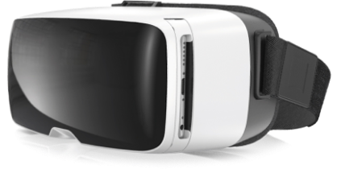

{% set title = 'VR-технология' %}
{% set link_page = 'Technology' %}

{% extends "html/layouts/default.html" %}

{% block main %}
<section class="technology">
  <div class="container">
    <h1 class="technology__title title-h2">VR-технология</h1>
    <div class="technology__wrapper">

      <figure class="technology__image-main">
        
        <button type="button" class="technology__image-button button"></button>
      </figure>

      <div class="technology__slider slider">
        <ul class="slider__box technology__slider-box">

          <li class="slider__item technology__item technology__item--1">
            <figure class="technology__item-image-container">
              
            </figure>
            <h3 class="slider__item-title">Masters Glass VR-iii</h3>
            <p class="slider__item-description technology__item-description">Используем только оригинальные
              импортные VR-очки. Технологии
              протестированы и безопасны для глаз. Напряжение во время просмотра —
              как при прогулке за счёт качественного
              обёъмного изображения.
            </p>
          </li>

          <li class="slider__item technology__item technology__item--2">
            <figure class="technology__item-image-container">
              
            </figure>
            <h3 class="slider__item-title">Безопасность</h3>
            <p class="slider__item-description technology__item-description">Зритель всегда находится в центре зала, и
              четко зафиксированв пространстве, что делает просмотр понятным и комфортным. Технология
              виртуальной реальности не портит зрение, а эффект присутсвтия развивает креативность и
              пространственное мышление.
            </p>
          </li>

          <li class="slider__item technology__item technology__item--3">
            <figure class="technology__item-image-container">
              
            </figure>
            <h3 class="slider__item-title">Оборудование</h3>
            <p class="slider__item-description technology__item-description">Все фильмы воспроизводятся при помощи
              встроенных в очки экранов мобильных телефонов ведущих брендов. Наши техники привезут всё
              обордуование с собой: от васнужно лишь помещение для урока.
            </p>
          </li>

          <li class="slider__item technology__item technology__item--4">
            <figure class="technology__item-image-container">
              
            </figure>
            <h3 class="slider__item-title">Система крепления</h3>
            <p class="slider__item-description technology__item-description">Подходит под любой размер головы,
              даже для первоклассника. Во время
              просмотра не получится навредить
              голове ребёнка за счёт тщательно
              проработанной конструкции очков.
            </p>
          </li>
        </ul>

        <div class="slider__buttons technology__buttons">
          <button class="slider__button slider__button--prev">Назад</button>
          <button class="slider__button slider__button--next">Вперед</button>
        </div>
      </div>
    </div>
  </div>
</section>
{% endblock %}